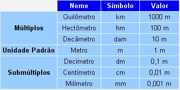

Medidas
O que é medida?
É a quantificação de uma grandeza por meio da comparação com um padrão previamente estabelecido.
O que é precisão na medida?
Em um objeto que foi medido várias vezes, é o quão próximas essas medições estão umas das outras.
O que é exatidão na medida?
Indica o quão próximo do valor real (do valor normalmente aceito como referência), está o valor medido.
O que são múltiplos e submúltiplos de unidades?
São usados para facilitar a conversão entre unidades diferentes.
